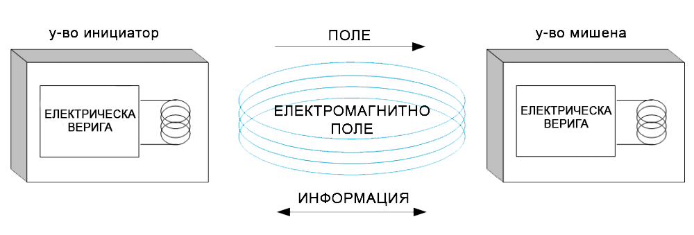

Near field communication (комуникация на къси разстояния), накратко NFC, е вид безконтактна комуникация между устройства като смарт телефони или таблети. Безконтактната комуникация позволява на потребителя да помаха с телефон покрай съвместимо с NFC устройство, за да изпрати информацията, без да се налага докосване на устройствата или конфигуриране на връзката с няколко стъпки.
Подобно на Wi-Fi, Bluetooth и други безжични начини за комуникация, NFC работи на принципа на изпращане на информация чрез радиовълни.
Също като RFID стандартите 14443 и FeliCa, NFC също използва индуктивното свързване. Подобно на принципа на трансформатора, магнитното поле на две проводникови бобини се използва, за да свърже избирателното устройство (инициатора) и слушащото устройство (мишената).
Конфигурация на устройства инициатор и мишена
Технологията NFC може да бъде ефективна в много области, но въпреки че обмяната на сигнала става на много близки разстояния, тя може да бъде уязвима. Основните методи на атака срещу NFC технологията са:
Поддръжката на NFC в мобилните устройства позволява на потребителите им да обменят почти всички видове информация с други устройства поддържащи NFC. Чрез NFC може да се обменя между устройствата видео клипове, изображения и други видове файлове, може да се обменят уеб страници, бележки и друг вид информация. Чрез мобилно устройство поддържащо NFC може да се извършват и безконтактни плащания.
Чрез мобилните устройства разполагащи с NFC може да се извършва контрол на достъпа. NFC може да замени картите и чиповете за достъп. Мобилно устройство с NFC може да отключва домовете ни, колите ни, може да включва уредите ни. NFC може и да се използва и за достъп до допълнителна информация, като например промоции за различни отстъпки или списък от намиращи се в близост до дадена местност обекти чрез доближаване на мобилното устройство до NFC таг и прочитането му.
NFC таг е малък микрочип, който съдържа памет и технология, която му позволява да комуникира. Към него е прикрепена антена. Тя представлява намотка. Корпусът ги държи заедно и обикновено представлява тънък слой пластмаса.
Добавянето на информация към NFC тага се нарича кодиране. Има огромно разнообразие от видове информация, която може да бъде кодирана до NFC таг. Например може да коридате уеб адрес, телефонен номер или просто идентификационен номер. Информацията обикновено се съхранява в точно определен вид NDEF (NFC формат за обмен на данни).
Количеството данни, които може да съхранява NFC, зависи от вида. В сравнение с други устройства с памет (USB, SD карта), капацитетът на NFC е сравнително малък.
NDEF е бинарен формат структуриран в съобщения, всяко от което може да съдържа няколко записа. Всеки запис има заглавна част (header), която съдържа мета информация за записа, като например типа на записа, дължината и т.н. и полезен товар (payload), който държи съдържанието на съобщението.
NFC транзакциите по принцип са кратки. Всяка обмяна съдържа само едно съобщение и всеки таг носи само едно такова.
Структура на NDEF съобщение, съставено от няколко записа; това е типичен пример - адресна книга с три записа (име, телефон, адрес)
Един NDEF запис съдържа товар с данни и мета информация, описваща как да се интерпретират данните. Всеки товар на запис може да е един от няколко различни типа данни. Заглавната част на всеки запис съдържа метадата, която описва записа и мястото му в съобщението, последвано от типа му и уникален идентификатор (ID). След заглавната част идва товара.
Структура на NDEF съобщение с детайли за байтовете на заглавната част
Както се вижда на фигурата, NDEF записът съдържа име на типа формат (TNF, Type Name Format), тип на товара, идентификатор на товара и самия товар. Товарът е най-важната част в NDEF записите – предава се неговото съдържание. Типът на товара е NFC специфичен тип, MIME медиен тип или URI, който казва как да се интерпретира товара. Идентификаторът на товара не е задължителен.
NEDF записите започват с име на типа формата. TNF показва структурата на стойността на полето за тип и как да се интерпретира. Има няколко възможни TNF стойности:
Типът на товара, както и типа на записа, описва съдържанието на товара в детайли. TNT дефинира формата на типа на товара. Типът може да е не NDEF специфичен тип, MIME тип, URI или външен тип. Дефиницията за NDEF тип на записа (RTD) описва добре познатите типове за запис и задава правилата за създаване на външни типове. RFC за MIME и URI RFC задават правилата за останалите типове.
Товарът е съдържанието на съобщението. Може да е всичко, което се побира в поредица байтове. Една добре структурирана NDEF библиотека не се интересува от това какво има в товара, просто го предава. Може да се енкрипне товара, да се изпрати чист текст или каквото ви дойде на ум.
Първите пет бита от NDEF записа са флагове, които казват как да се прочете записа и дават информация за мястото на записа в съобщението.
Флаговете в първия бит на главната част записа са както следва:
NDEF записите са вариращи по дължина структури от данни. Заглавната част на записа съдържа информацията, необходима за прочитане на данните.
Един NDEF запис започва с TNT байт, който включва и битовите флагове. След него е дължината на типа, която е поле от един байт и определя дължината на типа на товара в байтове. Дължината на полето е задължителна, но може да е 0.
Следва дължината на товара. Флагът за кратък запис е в първия байт и определя дължината на товара на записа. Ако SR е истина, дължината е един байт, иначе е четири байта. Дължината на товара е задължителна, но може да е 0.
Ако IL флагът е истина, следва идентификаторът за дължина.
Полето за тип на записа е с променлива дължина след идентификаторът за дължина. Дължината на типа определя колко байта трябва да бъдат прочетени.
Ако има идентификатор на записа, идва след типа. Дължината на полето зависи от идентификатора за дължина.
Това е краят на заглавната част. Следва товарът.
Размерът на товарите на NDEF записите е ограничен до 232-1 байта, поради което дължината на заглавната част е четири байта (или 232 бита). Обаче записите могат да се навържат заедно в съобщение и да формират по-големи товари. На теория няма лимит в дължината на едно NDEF съобщение. На практика, възможностите на устройствата и таговете създават ограниченията. Ако се обменят съобщения по peer-to-peer между две устройства, единствените ограничения са нивата на батерия на устройствата и търпението на хората, които ги държат. Ако комуникацията е между устройство и телефон обаче, ограничението е в това колко е паметта на тага.
ТЕКСТ
TNT: Mime Media
mimeType: text/pg
пример за payload: Hello World
ТЕКСТ
TNT: Mime Media
mimeType: text/plain
пример за payload: Hello World
ВИЗИТНА КАРТИЧКА
TNT: Mime Media
mimeType: text/vcard
пример за payload:
BEGIN:VCARD
VERSION:2.1
N:Doe;John;;;
FN:John Doe
ORG:DoeDesign;
URL:https://doe-design.com
TEL;WORK:135-758-0034
EMAIL;WORK: johndoe@doe-design.com
END:VCARD
ПРАЗЕН ЗАПИС / ИЗТРИВАНЕ НА ТАГ
TNT: Mime Media
mimeType: ''
пример за payload: ''
ТЕКСТ
TNT: Well Known
тип: T
пример за payload: test 123
ЛИНК
TNT: Well Known
тип: U
пример за payload: https://www.google.com/
Доближете NFC таг, за да запишете данните.